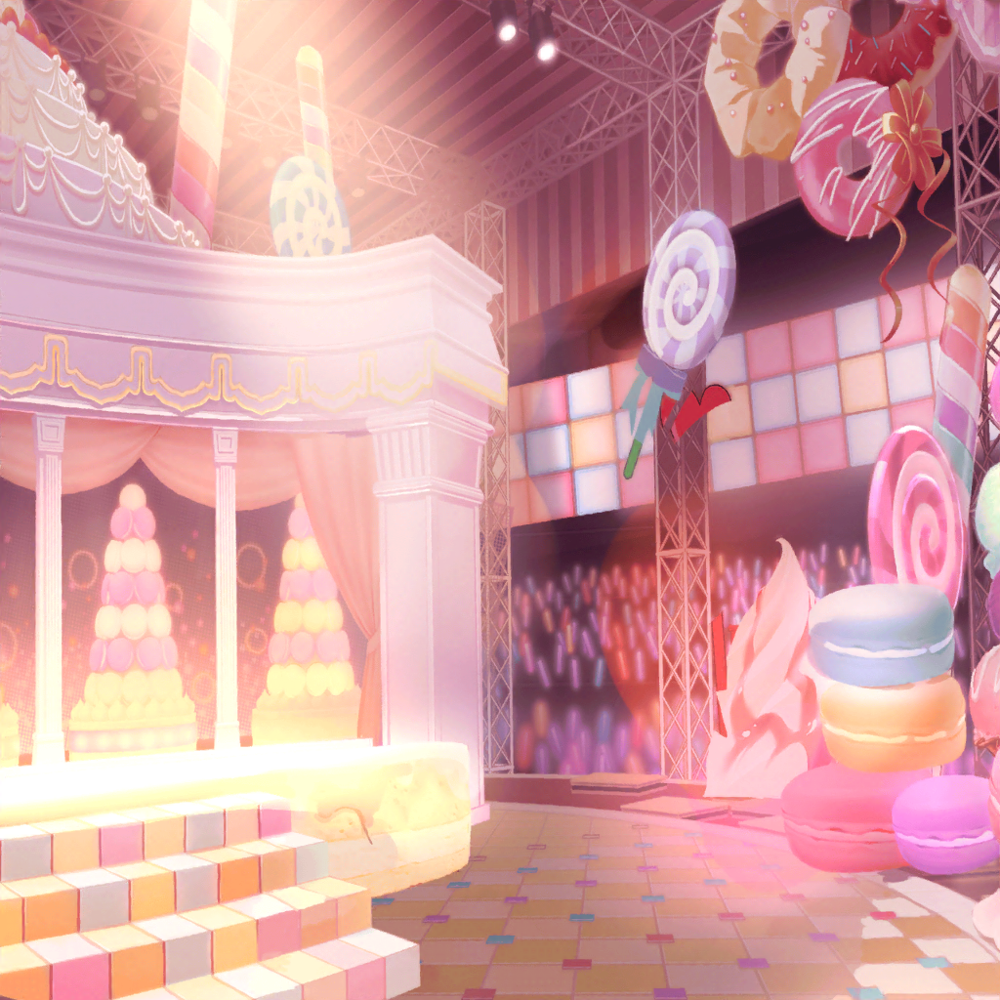

楽屋
イヴ
どういうことですか？ 音が止まって、何も聞こえなくなって……
お客さん、不思議そうな顔、してました
麻弥
機材トラブルですね……
照明は消えず、音だけが止まったことを考えると、
恐らくスピーカーやアンプの電圧の問題でしょう
彩
みんな、ごめんね……
私……いざという時に、声がでなくって……
麻弥
彩さんだけのせいじゃありません……！
過ぎたことは仕方ないですから、次に活かしていきましょうよ！
千聖
……次、ね……
イヴ
次……私たちはこの先、どうなるんでしょうか？ 次のお仕事は？
もしかして、もうダメなんでしょうか……？
千聖
私、スタッフさんに状況を聞きに行ってくるわ
彩
私も行くよっ！
スタッフさんに謝りたいし……
千聖
気持ちは嬉しいけれど……
今はスタッフさんもトラブル対応に忙しいはず
千聖
あまり大人数でいって、
スタッフさんを刺激しないほうがいいと思うの。
だから彩ちゃんは少し待っていて
彩
わかった……
イヴ
今は、待っていることしかできないのですか？
何か、できることは……
日菜
あたしも何が起きてるのかは気になるなー。
イヴちゃんみたいにネガティブになってるわけじゃないけど、
この状況はやっぱソワソワするよねー
彩
……
彩
（せっかく掴んだチャンスだったのに……
音が止まったことよりも……）

彩
あ……あ……
彩
（声が出ない……っ！）
彩
（失敗ができないってわかってたのに、
どうして私は何もしなかったの？）
彩
（あれが形式上のレッスンだってわかってたなら、
自分で自主練なりして、失敗が起きないように
アクションを起こすべきだったのに……！）
彩
……バカだ、私……
ステージ袖
千聖
（あんな失敗をしたら、もうこのバンドに未来はない。
それだけじゃない。私の名前にも泥を塗られた）
千聖
（どう挽回する……？ 挽回のチャンスを、どう掴む……？）
千聖
（むしろ、ここにいたままで、
挽回のチャンスを掴めるとは思えない。
それなら私がすることは１つ……）
千聖
（私は、失敗しない道を選ぶだけ……）
スタッフ
千聖さん！ よかった、今呼びに行こうと思っていたんですよ。
先ほどのライブは、本当に、申し訳ありませんでした
千聖
お疲れ様です。今はトラブル対応で大変だと思うのですが、
簡単に今の状況を伺えますか？
スタッフ
わかりました。まず、一番の原因ですが……
楽屋
彩
千聖ちゃん、遅いね……もしかして、
またトラブルでもあったのかな
イヴ
心配ですね
日菜
あー、暇だ暇！
なんかソワソワするし、あたし、ちょっと探してくるよ
彩
あっ、日菜ちゃん！
ステージ袖
日菜
千聖ちゃんはどこかな～っと……ん？
あれは千聖ちゃん……と、うちのスタッフの人か
スタッフ
その件に関しては……
千聖
……ありがとうございます。
では今の話、私からメンバーの子たちに伝えておきます
日菜
千聖ちゃん！ 遅いから探しにきちゃったよー。何話してたの？
千聖
日菜ちゃん。ごめんなさい、心配させてしまって。
スタッフの人から詳しい事情を聞いていたら
時間がかかってしまって
日菜
そっか。
ま、あたしはともかく他の子達はすっごい不安そうだったよ
千聖
急なトラブルに不安になるのは当然のことよ。
これからいろんな経験をしていくうちに、
みんなには少しずつ強くなってもらわなきゃ
千聖
……私がいなくても大丈夫なくらい、ね
千聖
いくらみんなより経験が長いといっても、
私にできることなんて、たかが知れてるから
日菜
千聖ちゃんがいなくても、ねえ……
楽屋
千聖
みんな、遅くなってごめんなさい
彩
千聖ちゃん！
麻弥
スタッフさん、何て言ってたんですか？
千聖
原因については、麻弥ちゃんが言っていた通りだった。
更に詳しい原因は確認中だそうよ
イヴ
……私達、これから、どうなるんですか？
千聖
私達の今後については、明日、また話があるみたい
彩
そっか……
あの、何か私たちにできることは……
千聖
スタッフさん達も、いい方向に向かうよう動き回ってくれている。
今日のことは私としてもすごく辛いし、
痛手だと思っているけれど……今は、スタッフさんを信じましょう
イヴ
はい……。私はブシドーで、人を信じることを学びました。
今、そのココロを活かす時、なんですよね
日菜
あたしも、ブシドー勉強しようかなあ
彩
……
彩
（信じる、か……
これから私が信じるべきものは……なんだろう？）